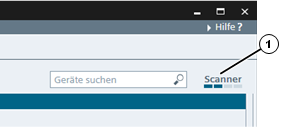

Symbol
Name
Funktion

Aktualisieren
Führt eine sofortige Aktualisierung des Netzwerk-Scans durch.

Export Topology
Führt einen Topology Export auf eine Festplatte durch.
Durch die Netzwerkanalyse von PRONETA Basic erhalten Sie einen schnellen Überblick darüber, welche Geräte in Ihrem PROFINET-Netzwerk installiert sind und darüber, wie diese miteinander verbunden sind. Mit der Netzwerkanalyse können Sie sich ferner verschiedene Netzwerkparameter der Geräte, wie z. B. die IP-Adressen, Gerätenamen usw. ansehen und diese ändern.
Es können verschiedene Netzwerke miteinander verglichen werden und Geräte automatisch oder manuell projektiert werden.
Im Online-Modus durchsucht PRONETA Basic das PROFINET-Netzwerk entweder einmalig oder kontinuierlich nach vorhandenen Geräten. Der Hauptbildschirm ist in drei Teile unterteilt:
Eine grafische Ansicht (1)
Eine Gerätetabelle (2) mit erreichbaren Geräten
Die Gerätedetails (3) mit den Parametern eines bestimmten Geräts
Zwischen der Gerätetabelle und den Gerätedetails kann durch Klick auf die jeweiligen Dreieck-Symbole in den Trennleisten des PRONETA Basic-Fensters umgeschaltet werden.
|
HINWEIS |
Falls die Netzwerkgröße 500 Geräte übersteigt, werden eventuell nicht alle Geräte verlässlich durch den Scan erfasst. In diesem Fall kann PRONETA Basic abstürzen. |
Funktionsleiste
Über die Funktionsleiste stehen folgende Funktionen zur Verfügung:
|
Symbol |
Name |
Funktion |
|
|
Aktualisieren |
Führt eine sofortige Aktualisierung des Netzwerk-Scans durch. |
|
|
Export Topology |
Führt einen Topology Export auf eine Festplatte durch. |
Ein Topologie-Export kann in verschiedenen Formaten durchgeführt werden:
Dies ist nützlich, um:
Die Option „Gerätedetails einschließen“ fügt der entstanden Datei Informationen über die Portkonfigurationen und Module hinzu.
Die in einer exportierten Konfiguration enthaltenen Datenfelder sind die gleichen, wie die derzeit sichtbaren Felder in der entsprechenden Gerätetabelle.
Wird die grafische Ansicht mit einbezogen, wird die Darstellung der Netzwerktopologie bei entsprechender Größe des Netzwerks auf mehrere Seiten im PDF verteilt.
Abhängig von der derzeitigen Betriebsart stehen nicht alle Exportoptionen zur Verfügung:
|
|
Online |
Offline |
Vergleich |
Konfiguration |
|
XML |
✔ |
x |
x |
x |
|
Grafische Ansicht |
✔ |
✔ |
✔ |
x |
|
Gerätetabelle (CSV) |
✔ |
✔ |
✔ |
x |
|
Grafische Ansicht + Gerätetabelle (PDF) |
✔ |
✔ |
x |
x |
Auf der rechten Seite der Funktionsleiste ist ein Eingabefeld (1) zu sehen, das Ihnen die Suche nach bestimmten Geräten ermöglicht. Der Suchbegriff, den Sie eingeben, wird mit allen Informationsfeldern abgeglichen (z. B. Gerätenamen, Typen, Netzwerkparameter, …).
Die Suche arbeitet ohne Unterscheidung nach Groß-/Kleinschreibung und gestattet keine Platzhalter oder reguläre Ausdrücke.

Treffer Ihrer Suche werden in der Grafischen Ansicht und in der Gerätetabelle in Orange hervorgehoben.
Ganz rechts in der Funktionsleiste befindet sich eine Scanner-Statusanzeige (1), die den Status des aktuellen Netzwerk-Scans anzeigt.
Jeder Netzwerk-Scan ist in vier Phasen unterteilt, die durch die Segmente der Scanner-Statusanzeige dargestellt werden. Ein Netzwerk-Scan ist abgeschlossen, sobald die Anzeige alle vier Segmente durchlaufen hat.
Durch Klicken mit der rechten Maustaste wird ein Kontextmenü mit einer Option angezeigt:
|
Symbol |
Name |
Funktion |
|
|
Scanner starten |
Schaltet die Netzwerk-Scans ein und wieder aus: Wenn der Scan augenblicklich läuft, wird er ausgeschaltet und umgekehrt. |
|
|
Scanner stoppen |
Wird der Scanner angehalten, so wird keine Netzwerklast erzeugt und es werden keine Änderungen der Topologie erfasst. Im Dialog Allgemeine Einstellungen können Sie steuern, ob PRONETA Basic mit dem Start des Scanners das Netzwerk einmalig oder ständig durchsucht.
Die grafische Ansicht ist eine grafische Darstellung des PROFINET-Netzwerks, seiner Geräte sowie deren Verbindungen untereinander, entweder während eines aktuellen Netzwerk-Scans oder aus einem zuvor abgespeicherten Referenznetzwerk. Die grafische Ansicht befindet sich in der linken oberen Ecke des PRONETA Basic-Fensters.
Bewegen Sie das sichtbare Netzwerksegment, indem Sie mit der Maus in einen freien Ansichtsbereich klicken und die Maus bei gedrückter Taste ziehen. Durch Bewegen des Mauszeigers über ein Gerät ändert sich die offene Hand zu einem Pfeil und ein so genannter Geräte-Tooltip mit grundlegenden Informationen zu diesem Gerät wird angezeigt.
Geräte-Anzeige
Der Gerätestatus wird durch unterschiedliche Farben des Gerätesymbols sowie dessen Rahmen angezeigt:
Symbolleiste
Im oberen Bereich der Ansicht befindet sich eine Symbolleiste mit einer Reihe von Funktionssymbolen:
|
Symbol |
Name |
Funktion |
|
|
Topologie-übersicht anzeigen |
Schaltet eine Topologieübersicht in der Online-Ansicht ein oder aus. (Siehe Topologieübersicht) |
|
|
Zoomauswahl |
Ermöglicht das Aufziehen eines Rechtecks innerhalb der grafischen Ansicht. Sobald Sie die Maustaste loslassen, wird so in die Ansicht gezoomt, dass nur der Bereich innerhalb des Rechtecks sichtbar ist. |
|
|
Vergrößerung an Bildschirm anpassen |
Zoomt so zurück, dass wieder alle Netzwerkteilnehmer in der Ansicht sichtbar sind. |
|
|
Zoomleiste |
Zoomt in das Netzwerk oder zurück durch Ziehen des Reglers nach rechts bzw. links oder aber durch Klicken auf „-“ bzw. „+“. (Sie können auch in die und aus der grafischen Ansicht zoomen, indem Sie die Maus über die Ansicht bewegen und das Scrollrad verwenden.) |
|
|
Physikalische Verbindungstypen anzeigen |
Zeigt die verschiedenen Übertragungsmedien in unterschiedlichen Farben an. (Siehe Geräteverbindungsarten) |
Die Topologieübersicht ist eine Ansicht oben links in der grafischen Ansicht, mit der große Netzwerke untersucht werden können. Sie zeigt eine schematische Übersicht aller Geräte, die beim aktuellen Netzwerk-Scan gefunden wurden, unabhängig von dem für die Online-Ansicht gewählten Zoomfaktor an.
Der Bereich des Netzwerks, der in der Online-Ansicht aktuell zu sehen ist, wird mit einem hellblauen, teiltransparenten Rechteck angezeigt. Durch Ziehen des Rechtecks in der Topologieübersicht wird das sichtbare Netzwerkbereich in der Online-Ansicht verschoben.
Ziehen Sie die rechte oder untere Kante der Topologieübersicht, wenn Sie die Größe der Ansicht verändern wollen.
Wenn die Option „Physikalische Verbindungstypen anzeigen“ in der Symbolleiste ausgewählt wurde, werden die Verbindungen zwischen den Geräten folgendermaßen farbig gekennzeichnet:
Schwarz: Ethernet-Verdrahtung aus Kupfer
Orange: Lichtwellenleiterverbindung
Zwei parallele Linien weisen auf eine Ringtopologie hin.
Für Geräte, die ohne jegliche Verbindung zu anderen Geräten angezeigt werden, konnten die erforderlichen Informationen nicht ermittelt werden.
Durch Bewegen des Mauszeigers über ein Gerät wird ein Geräte-Tooltip mit folgenden Informationen angezeigt:
Gerätename
Gerätetyp
IP-Adresse
Firmware-Version (wo zutreffend)
Durch Bewegen des Mauszeigers über einen Geräteport wird Folgendes angezeigt:
Schnittstellen-Name
IP-Adresse
Port-ID (nur für verdrahtete Anschlüsse)
Name des Nachbargerätes

Durch Klicken mit der rechten Maustaste auf ein beliebiges Gerät in einer grafischen Ansicht oder in der entsprechenden Gerätetabelle öffnet sich ein Kontextmenü mit unterschiedlichen Funktionen.

Nicht alle Menüeinträge sind auch für alle Geräte verfügbar, wobei die tatsächlichen Einträge vom Status des jeweiligen Gerätes abhängen.
|
Symbol |
Name |
Funktion |
|
|
LED-Blinken starten |
Lässt die LEDs am realen Gerät zur einfachen Identifizierung blinken. |
|
|
IO-Test starten |
Startet sofort einen I/O Test für das ausgewählte Gerät. |
|
Webbrowser starten |
Öffnet den Web-Browser Ihres PCs und stellt eine Verbindung zum Webserver des entsprechenden Gerätes her. |
|
|
|
LED-Blinken bei doppelten Namen/IP-Adressen starten (stoppen) |
Wie „LED-Blinken starten”, lässt aber die LEDs aller Geräte blinken, die den gleichen Namen bzw. die gleiche IP-Adresse wie das ausgewählte Gerät haben. |
|
Netzwerkparameter setzen |
Öffnet ein Popup-Fenster, in dem Sie verschiedene Netzwerkparameter des ausgewählten Gerätes einstellen können. Nähere Informationen hierzu finden Sie unter Netzwerkparameter setzen. |
|
|
|
Netzwerkparameter zurücksetzen |
Setzt die IP-Adresse und den Gerätenamen des ausgewählten Gerätes auf die Werkseinstellungen zurück. Wenn der Befehl aus der Gerätetabelle heraus gewählt wird, ist es möglich, mehrere ausgewählte Geräte gleichzeitig zurückzusetzen. |
|
Zusätzliche I&M-Daten bearbeiten |
Öffnet ein Popup-Fenster, in dem Sie Daten zur Identifizierung und Wartung („I&M“) des Gerätes, wie z. B. Ort und Datum der Installation, eintragen können. |
|
|
|
Als Ausgangspunkt in der grafischen Ansicht benutzen |
Arrangiert die grafische Ansicht neu, so dass das ausgewählte Gerät in der oberen linken Ecke erscheint. |
In dieser Tabelle werden die Geräte aufgelistet, die wahlweise während eines aktuellen Netzwerk-Scans (nur im Online-Modus) oder in einem bereits gespeicherten Referenznetzwerk gefunden werden. Sie wird unter der grafischen Ansicht des PRONETA Basic-Fensters angezeigt.
In der Tabelle kann eine große Menge verschiedener Gerätedaten angezeigt werden. Durch Klicken mit der rechten Maustaste auf eine beliebige Stelle im Tabellenkopf wird ein Menü geöffnet, in dem Sie die gewünschten Informationsfelder auswählen können.
Ein orangefarbener Rahmen um die Tabellenzellen weist auf einen doppelten Gerätenamen oder IP-Adresse hin.
In weiße Zellen innerhalb der Tabelle können Informationen eingetragen werden. Die neuen Werte werden sofort in das entsprechende Gerät geschrieben, sobald die Zelle den Fokus verliert. (Dies ist eine Alternative zur Verwendung des Kontextmenüeintrags „Netzwerkparameter setzen”)
Durch Klicken mit der linken Maustaste auf eine Spaltenüberschrift werden die Daten in dieser Tabelle in aufsteigender Reihenfolge sortiert. Die kleinen Dreiecke „▲” oder „▼” in der Spaltenüberschrift zeigen das Sortierungskriterium.
Durch Ziehen einer Spaltenüberschrift mit der Maus werden die Tabellenspalten entsprechend neu angeordnet.
Durch Klicken mit der rechten Maustaste auf einen beliebigen Tabelleneintrag wird das Kontextmenü des aktuellen Gerätes angezeigt.
Im rechten Teil des PRONETA Basic-Fensters wird eine Detailansicht angezeigt.
Diese Ansicht enthält zusätzliche Informationen zu einem Gerät, das zuvor in der Gerätetabelle ausgewählt wurde.
Zweige der Baumstruktur mit den Geräteeigenschaften können durch Klicken auf das Dreiecks-Symbol im entsprechenden Abzweig geöffnet und wieder geschlossen werden.
Für Nicht-PROFINET-Geräte, die mit PROFINET-Geräten verbunden sind und einen Asset Management Record (AMR) bereitstellen, werden auch die Daten aus dem AMR in den Gerätedetails angezeigt.
Dieses Popup-Fenster ermöglicht die direkte Eingabe folgender Parameter für ein einzelnes Gerät:
Gerätename
IP-Konfiguration entweder statisch oder über DHCP
Außerdem, wo zutreffend:
IP-Adresse
Netzwerkmaske
Adresse des Gateway-Routers
Aktivieren Sie das Kontrollkästchen bei „Einstellungen dauerhaft anwenden“, um sicherzustellen, dass die neuen Parameter auch nach einem Neustart des Geräts beibehalten werden.